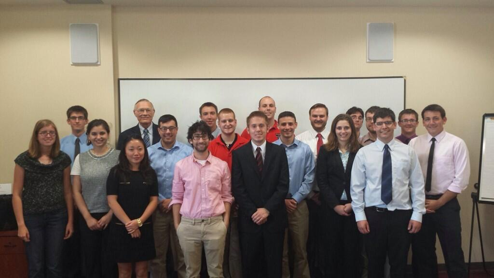

This site is an archived version of the original site.
About Us

Mission:
Develop an innovative 3D printing workstation for in-situ space manufacturing
Vision:
Lead and inspire next generation research to further the development of the extraterrestrial frontier
The University of Wisconsin-Madison Badger COMET student team is excited to have been accepted for the Exploration Habitat 2014 Academic Innovation Challenge. For this competition, the design group will create an in-situ manufacturing workstation prototype designed for integration within the Deep Space Habitat (DSH). In addition, the project provides students, faculty, statewide communities, and businesses with a unique opportunity to participate in a NASA design experience.
The design team is comprised of students with diverse cultural backgrounds, academic fields, and professional experiences. Through a comprehensive systems engineering approach, the current notional design and project workflow demonstrates knowledge from many academic fields which creates a quality design process. During the design phase the UW-Madison student team will work in full accord with the rigorous standards of engineering practice required by the ABET certified UW-Madison senior design sequence, as well as industrial manufacturing and design standards of relevant professional organizations. The team understands design and logistical challenges associated with a project of this scope and will make full use of available technical and financial resources while developing other resources as required, ensuring the delivery of a functional prototype. The project will not only contribute to current NASA research and goals, but also serves as a channel through which school children and underrepresented minorities can be engaged in STEM.
Meet The Team
Ryan Knippel
Administration: Teaching Assistant
Email: rknippel@wisc.edu
Fields of Study:B.S. Engineering Mechanics and Astronautics, M.S. Engineering Mechanics and Astronautics
Hometown: Wausau, WI
Engineering Interests:
- Aerospace Flight Technologies
- Space Exploration
Previous Experience:
- Teaching Assistant for four Senior Design Courses at UW-Madison
- Mechanical Design Intern with C-Motive Technologies, Inc.
Sara Beyer
Design Group: Controls/Electronics, Focus on motor/motion control and circuit design
Email: srbeyer2@wisc.edu
Hometown: Monona, WI
Field of Study: Electrical Engineering
Engineering Interests:
- PCB & Hardware Design
- Linux
Outreach:
- Alpha Omega Epsilon (AOE)
- Eta Kapa Nu (EKN)
- Tau Beta Pi (TBP)
Previous Experience: Summer 2013 co-op as an associated embedded engineer at Extreme Engineering Solutions.
Tyler Bream
Design Group: Controls/Electronics, Firmware Development Leader.
Email: berabream@gmail.com, tbream@wisc.edu
Hometown: Glenview, IL
Fields of Study: Computer Engineering, Computer Sciences, Mathematics
Engineering Interests:
- Computing Systems
- Digital Design
- Fast, Efficient Programming
Outreach:
- Kappa Eta Kappa (KHK)
- Eta Kappa Nu (EKN)
- Tau Beta Pi (TBP)
Previous Experience:
- Tutor with Undergraduate Learning Center
- Web Programmer with Undergraduate Learning Center
- Software Engineer with Jump Trading
Reid Carlson
Design Group: Extruder Axis Control Lead
Email: racarlson2@wisc.edu
Hometown: Lakeville, MN
Fields of Study:B.S. Engineering Mechanics and Astronautics, B.S. Economics
Engineering Interests:
- Aerodynamic Design
- Computational Fluid Dynamics
- Structural Design
- Rocket Development
Outreach:
- UW-Madison Concrete Canoe Team
- UW-Madison Steel Bridge Team
- American Society of Civil Engineers
- American Institute of Aeronautics and Astronautics (AIAA)
Previous Experience: Engineering Intern at J&L Fiber Services in Waukesha, WI
Skylar Dhaese
Design Group: Table Control
Email: dhaese@wisc.edu
Hometown: Oregon, IL
Field of Study: Engineering Mechanics and Astronautics
Engineering Interests:
- Deep space exploration
- Aerodynamics
- Structural dynamics
Outreach:
- National Organization for Business and Engineering Representative
- Concrete Canoe
Previous Experience:
- Summer 2012 Engineering Internship with Illinois Department of Transportation
- Design analysis engineer for Concrete Canoe
Sean Kelly
Design Group: Axis Control
Email: sjkelly2@wisc.edu
Hometown: Milwaukee, WI
Field of Study: B.S. Engineering Mechanics and Astronautics, B.S. Mathematics, M.S. Engineering Mechanics (2015)
Engineering Interests:
- Finite Element Analysis (FEA)
- Design Mechanics in Engineering
- Dynamic and Vibrational Systems
- Theoretical Modeling
Outreach:
- Wisconsin Engineer Magazine
- American Institute of Aeronautics and Astronautics (AIAA)
Previous Experience: Engineering Internship with Altair working on FEA using Hyperworks
Benjamin Lange
Design Group: Axis Control
Email: bjlange@wisc.edu
Hometown: Eau Claire, WI
Field of Study: Engineering Mechanics and Astronautics
Engineering Interests:
- Testing & Design
- Operational Management
- Manufacturing of Airplanes, Engines, Satellites, or Rockets
Outreach:
- Zero Gravity Team for NASA SEEDS Program Research for Electric Capacitance Volumetric Topography
- UW-Madison Concrete Canoe Stress Analysis Team
- Kappa Eta Kappa Electrical Engineering Fraternity
Previous Experience:
- Field Service Engineer Co-op
- General Electric Aviation in Seattle, WA (June 2013 - December 2013)
- Overhaul, New Make, and Test Engineer Co-op at General Electric Aviation in Strother, KS (January 2012 - August 2012)
- Manufacturing Process Engineer Internship at General Electric Aviation in Wilmington, NC (May 2011 - August 2011)
Jake Ptaszynski
Design Group: Print Head Design
Email: ptaszynski@wisc.edu
Hometown: Appleton, WI
Fields of Study: Engineering Mechanics and Astronautics, Computer Sciences Certificate
Engineering Interests:
- Missiles
- Rockets and Space Exploration
Outreach:
- AIAA Member
- Boy Scout Adult Leader
Alex Schwartz
Design Group: Controls/Electronics Lead, Electronics/Mechanics Interfacing
Email: schwartz4@wisc.edu
Hometown: Sussex, WI
Fields of Study:B.S. Engineering Mechanics, B.S. Computer Sciences, M.S. Engineering Mechanics (2015)
Engineering Interests:
- Finite Element Analysis (FEA)
- Design Mechanics in Engineering
- Rocket Propulsion
- Mechatronics and Electronics Controls
- Computational Design and Simulation Models
Outreach:
- Student Web Administrator for UW-Madison College of Engineering Faculty/Staff Directory
- Assistant Coordinator UW-Madison eSports
- Student Liason for Cross-College Advising
Previous Experience:Summer/Fall 2011 Design Engineering co-op with Rexnord Inc. in Grafton, WI
Administration:Webmaster and IT Developer Lead
Casey Sennott
Design Group: Table Axis Control, Systems Engineering and Documentation Lead
Email: sennott@wisc.edu
Hometown: Mequon, WI
Field of Study: Engineering Mechanics and Astronautics, Technical Japanese, Technical Communication
Engineering Interest:
- Linear and non-linear structural analysis
- Numerical design optimizatoin
- Technical communication and translation
Outreach:
- Wisconsin Engineering Magazine
Previous Experience:
- Structural Analysis Intern at Oshkosh Corporation
- Structural Dynamics Intern at UTC Aerospace Systems
- Thermal Analysis Intern at UTC Aerospace Systems.
Erik VanderSanden
Design Group: Folding Mechanism and Table Control
Email: evandersande@wisc.edu
Hometown: Oregon, WI
Field of Study: Engineering Mechanics and Astronautics, Mathematics, German, International Studies
Engineering Interests:
- Design Mechanics in Engineering
- Computational Design
- Simulation Model Analysis
Outreach:
- UW Athletic Department Guest Service Intern
Previous Experience: Engineering Intern at Isthmus Engineering in Madison, WI
Steve Wishau
Design Group: Extruder Head, Axis Control
Email: wishau@wisc.edu
Hometown: Racine, WI
Field of Study:B.S. Engineering Mechanics and Astronautics, B.S. Mathematics
Engineering Interests:
- Aerospace flight technologies
- Aerodynamics
- Thermodynamics and energy transfer
- Space tourism and consumerism
- 3D Printing methods
Outreach:
- Engineering Ambassador for Prospective Student Presentations
- UW-Madison AIAA Chapter - Zero Gravity Team
Previous Experience: Western States Envelope and Label - Manufacturing engineer and 3D printing technologist, Wisconsin Engineer Magazine Writing Editor
Administration: Outreach and Public Relations Coordinator
Andrew Witzmann
Design Group: Folding Mechanism, Systems Engineering
Email: witzmann@wisc.edu
Hometown: Stillwater, MN
Field of Study: Engineering Mechanics and Astronautics
Engineering Interests:
- Engineering Design
- Rocket Propulsion
- Systems Engineering
- Project Engineering
Outreach:
- UW-Madison Concrete Canoe Team
Previous Experience:
- Engineering Internship with American Engineering Testing in St. Paul, MN
- Operations Engineering Co-op with UTC Aerospace Systems in Rockford, IL